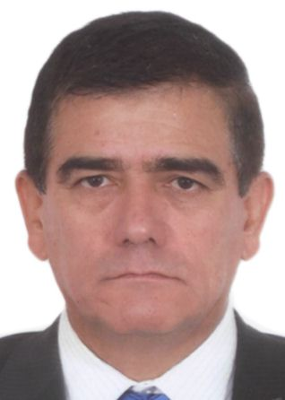
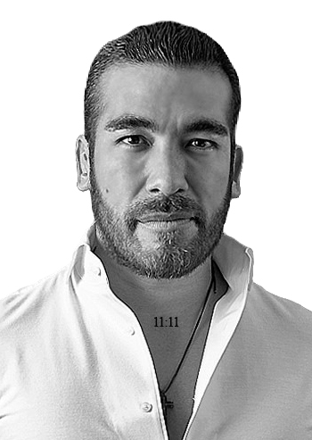
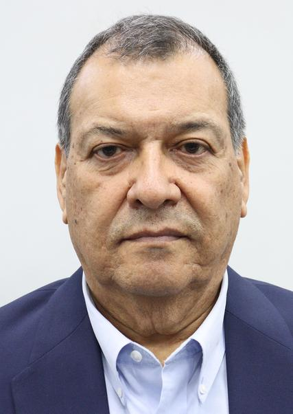
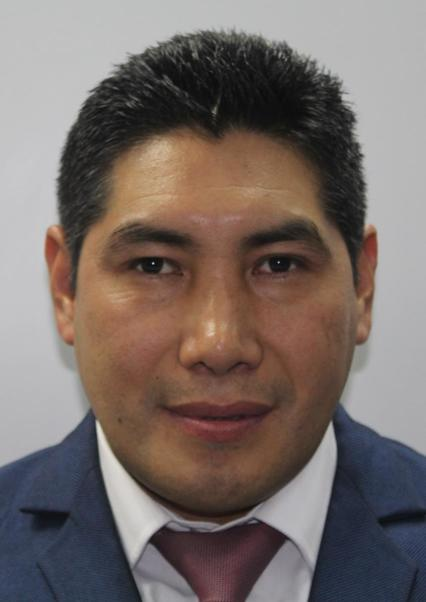
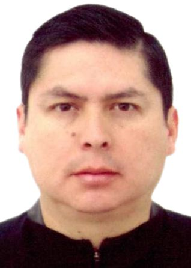
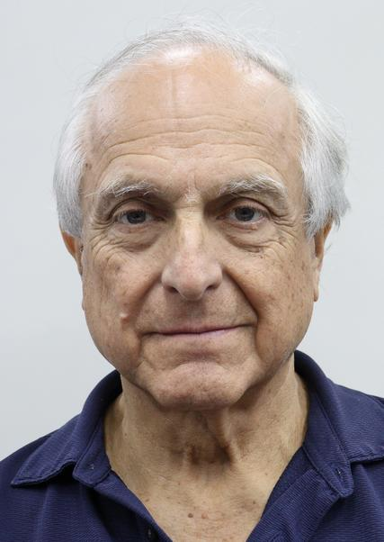
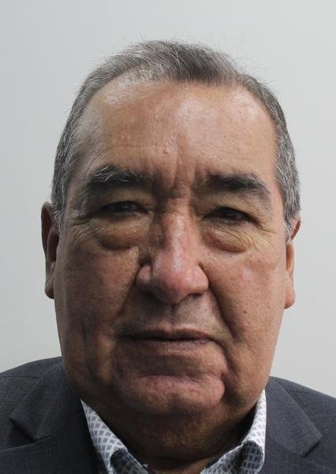
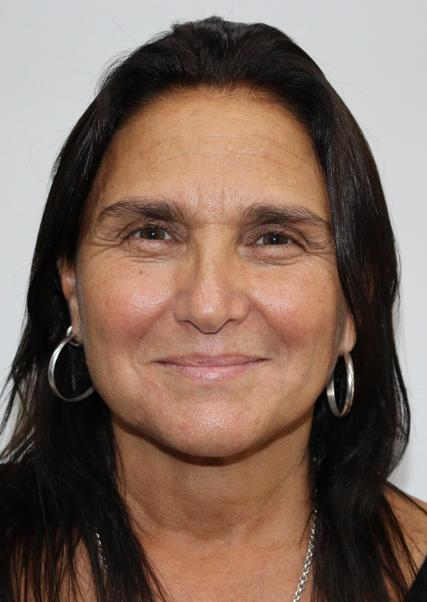
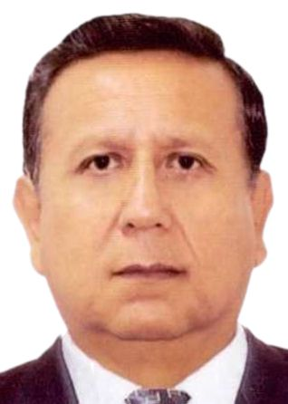

| ENUMERADOR | NOMBRE | PARTIDO | FOTO | PROPUESTAS |
|---|---|---|---|---|
| 1 | PABLO ALFONSO LOPEZ CHAU NAVA | AHORA NACION - AN |  |
Propuesta de desarrollo nacional con enfoque técnico y académico. |
| 2 | RONALD DARWIN ATENCIO SOTOMAYOR | ALIANZA ELECTORAL VENCEREMOS |  |
Enfoque en justicia social y representación popular. |
| 3 | CESAR ACUÑA PERALTA | ALIANZA PARA EL PROGRESO |  |
Impulso a la educación, empleo y desarrollo regional. |
| 4 | JOSE DANIEL WILLIAMS ZAPATA | AVANZA PAIS - PARTIDO DE INTEGRACION SOCIAL |  |
Promueve seguridad, inversión y crecimiento económico. |
| 5 | ALVARO GONZALO PAZ DE LA BARRA FREIGEIRO | FE EN EL PERU |  |
Propuestas de renovación política y gestión municipal. |
| 6 | KEIKO SOFIA FUJIMORI HIGUCHI | FUERZA POPULAR |  |
Línea conservadora con énfasis en orden y estabilidad. |
| 7 | FIORELLA GIANNINA MOLINELLI ARISTONDO | FUERZA Y LIBERTAD |  |
Propuestas de modernización del Estado y salud pública. |
| 8 | ROBERTO HELBERT SANCHEZ PALOMINO | JUNTOS POR EL PERU |  |
Agenda progresista con enfoque social e inclusión. |
| 9 | RAFAEL JORGE BELAUNDE LLOSA | LIBERTAD POPULAR |  |
Defensa de libertades económicas y democracia. |
| 10 | PITTER ENRIQUE VALDERRAMA PEÑA | PARTIDO APRISTA PERUANO |  |
Tradición aprista con enfoque en justicia social. |
| 11 | RICARDO PABLO BELMONT CASSINELLI | PARTIDO CIVICO OBRAS |  |
Gestión práctica orientada a obras públicas. |
| 12 | JORGE NIETO MONTESINOS | PARTIDO DEL BUEN GOBIERNO |  |
Ética, transparencia y fortalecimiento institucional. |
| 13 | CHARLIE CARRASCO SALAZAR | PARTIDO DEMOCRATA UNIDO PERU |  |
Unidad nacional y desarrollo sostenible. |
| 14 | ALEX GONZALES CASTILLO | PARTIDO DEMOCRATA VERDE |  |
Agenda ambiental y desarrollo ecológico. |
| 15 | ARMANDO JOAQUIN MASSE FERNANDEZ | PARTIDO DEMOCRATICO FEDERAL |  |
Propuesta de descentralización y federalismo. |
| 16 | GEORGE PATRICK FORSYTH SOMMER | PARTIDO DEMOCRATICO SOMOS PERU |  |
Gestión moderna y lucha contra la corrupción. |
| 17 | LUIS FERNANDO OLIVERA VEGA | PARTIDO FRENTE DE LA ESPERANZA 2021 |  |
Enfoque en justicia y lucha anticorrupción. |
| 18 | MESIAS ANTONIO GUEVARA AMASIFUEN | PARTIDO MORADO |  |
Reformas institucionales y transparencia. |
| 19 | CARLOS GONSALO ALVAREZ LOAYZA | PARTIDO PAIS PARA TODOS |  |
Propuestas ciudadanas y participación. |
| 20 | HERBERT CALLER GUTIERREZ | PARTIDO PATRIOTICO DEL PERU |  |
Nacionalismo y defensa de la soberanía. |
| 21 | YONHY LESCANO ANCIETA | PARTIDO POLITICO COOPERACION POPULAR |  |
Economía solidaria y justicia social. |
| 22 | WOLFGANG MARIO GROZO COSTA | PARTIDO POLITICO INTEGRIDAD DEMOCRATICA |  |
Ética pública y democracia participativa. |
| 23 | VLADIMIR ROY CERRON ROJAS | PARTIDO POLITICO NACIONAL PERU LIBRE |  |
Izquierda con enfoque en cambio estructural. |
| 24 | FRANCISCO ERNESTO DIEZ-CANSECO TÁVARA | PARTIDO POLITICO PERU ACCION |  |
Propuestas democráticas y reforma política. |
| 25 | MARIO ENRIQUE VIZCARRA CORNEJO | PARTIDO POLITICO PERU PRIMERO |  |
Continuidad de reformas y gobernabilidad. |
| 26 | WALTER GILMER CHIRINOS PURIZAGA | PARTIDO POLITICO PRIN |  |
Agenda regional y desarrollo local. |
| 27 | ALFONSO CARLOS ESPA Y GARCES-ALVEAR | PARTIDO SICREO |  |
Innovación política y nuevas propuestas. |
| 28 | CARLOS ERNESTO JAICO CARRANZA | PERU MODERNO |  |
Modernización del Estado y digitalización. |
| 29 | JOSE LEON LUNA GALVEZ | PODEMOS PERU |  |
Propuestas sociales y apoyo a emprendedores. |
| 30 | MARIA SOLEDAD PEREZ TELLO DE RODRIGUEZ | PRIMERO LA GENTE - COMUNIDAD, ECOLOGIA, LIBERTAD Y PROGRESO |  |
Enfoque en ciudadanía, ética y medio ambiente. |
| 31 | PAUL DAVIS JAIMES BLANCO | PROGRESEMOS |  |
Desarrollo económico con inclusión social. |
| 32 | RAFAEL BERNARDO LOPEZ ALIAGA CAZORLA | RENOVACION POPULAR |  |
Postura conservadora y gestión empresarial. |
| 33 | ANTONIO ORTIZ VILLANO | SALVEMOS AL PERU |  |
Propuestas de rescate institucional y social. |
| 34 | ROSARIO DEL PILAR FERNANDEZ BAZAN | UN CAMINO DIFERENTE |  |
Alternativa política con enfoque ciudadano. |
| 35 | ROBERTO ENRIQUE CHIABRA LEON | UNIDAD NACIONAL |  |
Orden, seguridad y fortalecimiento del Estado. |